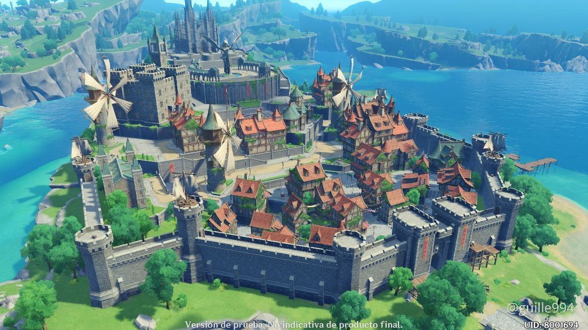

Known as the City of Freedom, Mondstadt is located at the northeast of Teyvat. The wind carries the scent of dandelion, the whispers of songs and a gentle tune all from the Anemo Archon, Barbatos, who watches over the children of his nation. Once a mere formless wind spirit, Barbatos gained power from the people of Old Mondstadt during the war against a tyrant king called Decarabian. Soon enough, the wind spirit ascended to godhood and became the Barbatos of the current time. Mondstadt is known not only for it's warm breeze, but is reknowned for it's delicious and tantalizing wine. Along with traditional and lively festivals such as the Windblume Festival, Ludi Harpastum, and Weinlestfest, Mondstadt truly is a nation of freedom.
Mondstadt is protected not only by its Archon, but by an order of knights called the Knights of Favonius (K.o.F)- founded by the heroine Vanessa with the help of Barbatos 1000 years ago to prevent the corrupt rule of aristrocats. The head of the knights is Grand Master Varka, who is currently on an expedition along with other knights. Overseeing the knights in his steed is Acting Grand Master Jean, the Dandelion Knight and the Lion of the South. The Lion of the South is one out of the Four Winds of Mondstadt, four entities entrusted by Barbatos to keep the nation safe a thousand years ago. These entities are Dvalin (Dragon of the East), Boreas (Wolf of the North), Vanessa (the original Lion of the South and Falcon of the West), and Jean (current Lion of the South).
| |
|
|
| Amber | Outrider of the K.o.F | Pyro/Fire |
| Albedo | Chief Alchemist of the K.o.F | Geo/Earth |
| Barbara | Deaconess of Mondstadt's Church | Hydro/Water |
| Diluc | Owner of Dawn Winery and Bartender at Angel's Share | Pyro/Fire |
| Eula | Captain of the Reconnaissance Company of the K.o.F | Cryo/Ice |
| Lisa | Librarian of the K.o.F | Electro/Lightning |
| Kaeya | Cavalry Captain of the K.o.F | Cryo/Ice |